Millions of years ago, the Indian sub-continent crashed into the Asia mainland, creating the Himalayan mountains, that made China more difficult to access from outside. From the point of view of geographic determinism, one consequence of this is that India was wholy colonized by the British Empire while China was only partly colonized (Hong Kong). In this sense India is more "modernized" than China.
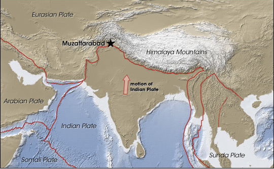
In the 1850s-60s, as the Qing dynasty grew corrupt and weak (a recurring theme in Chinese history), the "Heavenly Kingdom" Rebellion erupted. Their leader claimed to be Jesus's younger brother.
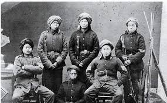
In the late 1890s, the 'Boxer Rebellion' erupted in China. Followers believed they were invulnerable to knives and bullets. These two examples happened around the time of the American Civil War. It may not be apparant from the photos, but I think the Chinese common people are significantly backwards compared to Americans at that period.
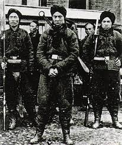
The Empress Dowager Cixi (1835–1908) controlled the Qing dynasty for nearly half a century. Her fingernails and foot-binding were seen as a token of privilege. She could not play tennis or ride the bicycle, which caused her to poison other people. (Half joking, but there is a deep truth in that modernization would make her look ridiculous and humiliated more than others.)
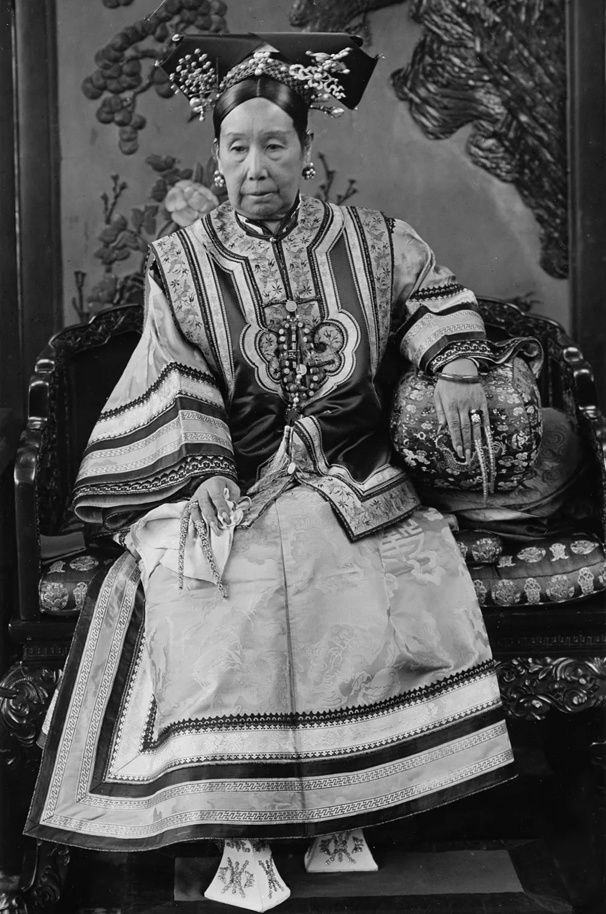
Emperor Guangxu (1871–1908) of the Qing dynasty, failed to modernize China. He was poisoned by the Empress Dowager and died.
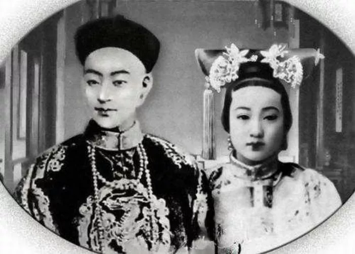
Two reformists, 康有爲 and 梁啓超, in the late Qing dynasty, their plot to free the Emperor from confinement was betrayed by Yuan (below) which led to the execution of six martyrs (these two luckily escaped).
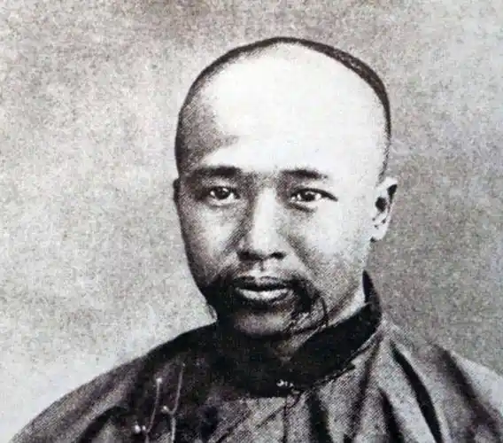
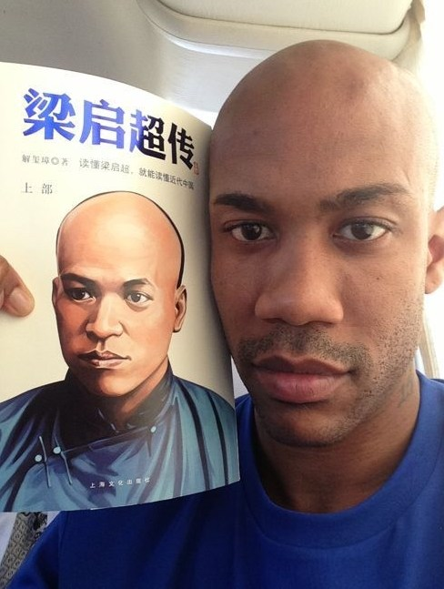
Yuan Shikai (1859–1916) proclaimed himself Chinese Emperor and ruled for ~100 days.
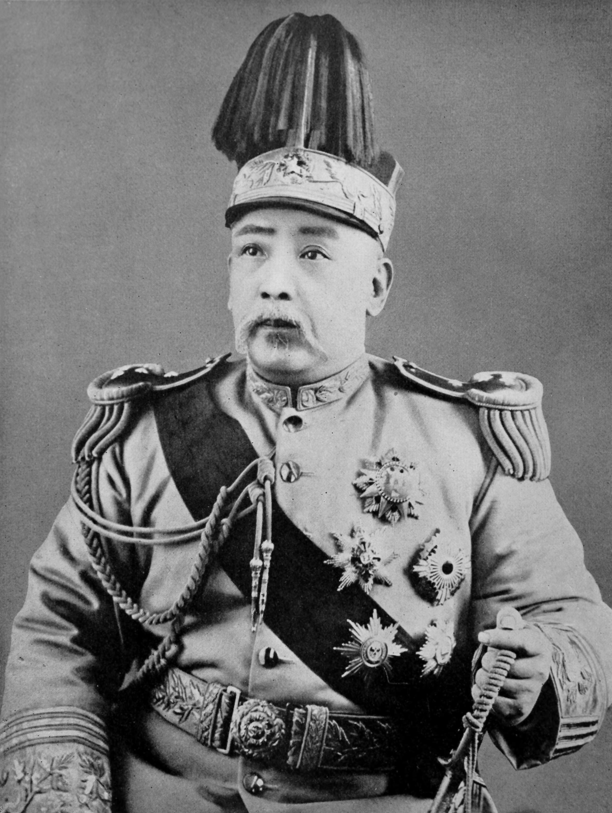
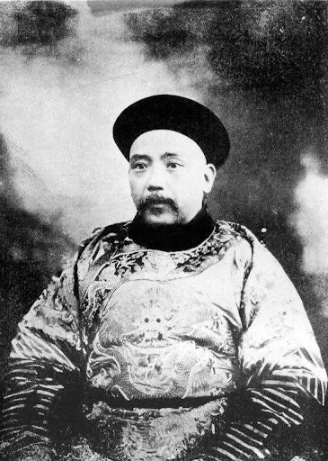
Sun Yat-sen (1866–1925), "father of modern China",
a contemporary of Lenin (1870-1924). In 1910 the Qing dynasty in China was toppled, while in 1917 the Tsar in Russia was overthrown. In December the same year, in Russia, the Bolshevik revolution succeeded, while the Chinese Civil War would drag on for 4 decades, spanning WW1 and even after WW2.
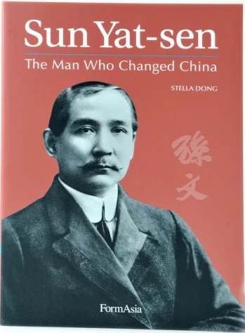
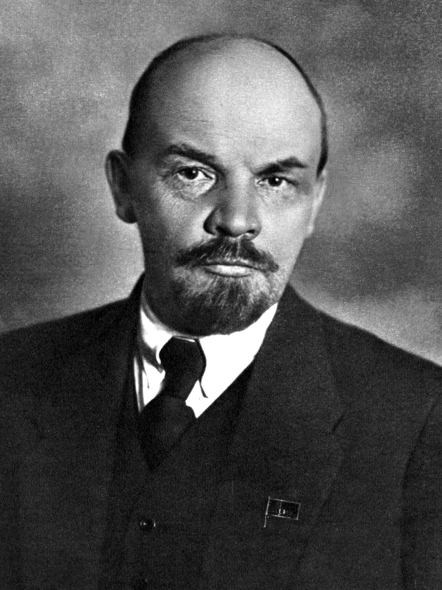
Sung Chiao-ren (1882–1913), the first elected president of China, was assassinated by Yuan also. In the right photo he's already dead, people dressed him up for the photo. While lingering in his deathbed, he was still uncertain who ordered the assassination, but his dying wish was to "finalize the negotiation with Yuan about setting up the parliamentary system in China," which he was about to board a train to Beijing to do, but he was shot by an assassin at the train station. In a self-incriminating manner, Yuan later reneged his words and proclaimed himself emperor.

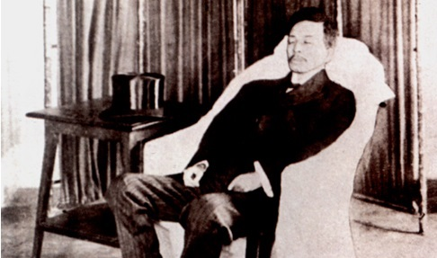
Chinese Civil War (1912-1937, interrupted by WW2). Every few hundred years, a Chinese dynasty falls and chaos ensues with warlords vying for supremacy.
This video, showing their shifting territories and alliances, is endlessly fascinating to watch, especially if you know the colorful lives of the warlords, and with the right background music. This pattern of internal fighting harks back to the famous "Three Kingdoms" period around 200AD, which stories are well-known by most Chinese school children and constitutes a collective psyche. The Romance of Three Kingdoms is a fictionalized account of the real history, with some distortions, which added to the confusion as to the moral lesson of that period. Many Chinese people take for granted a barbaric, might-makes-right logic in pursuit of the throne, while some revolutionists such as Dr. Sun were thinking of the modernization and establishment of democracy in China. These two opposing logics were operating at the same time.
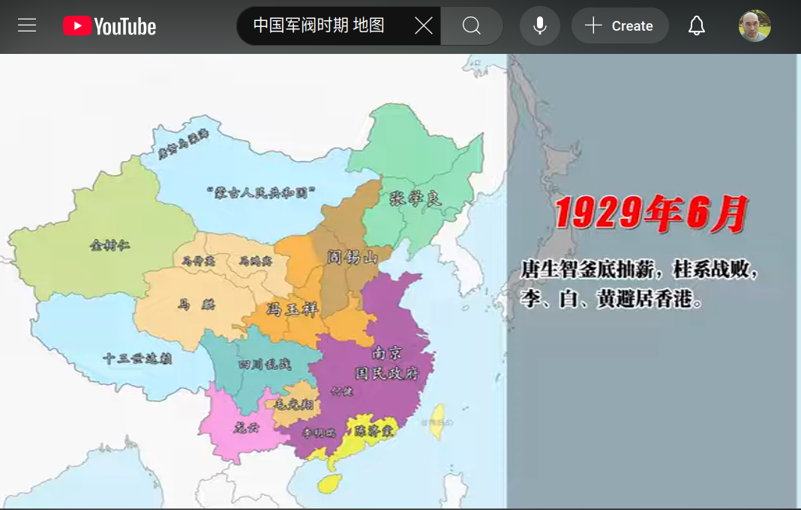
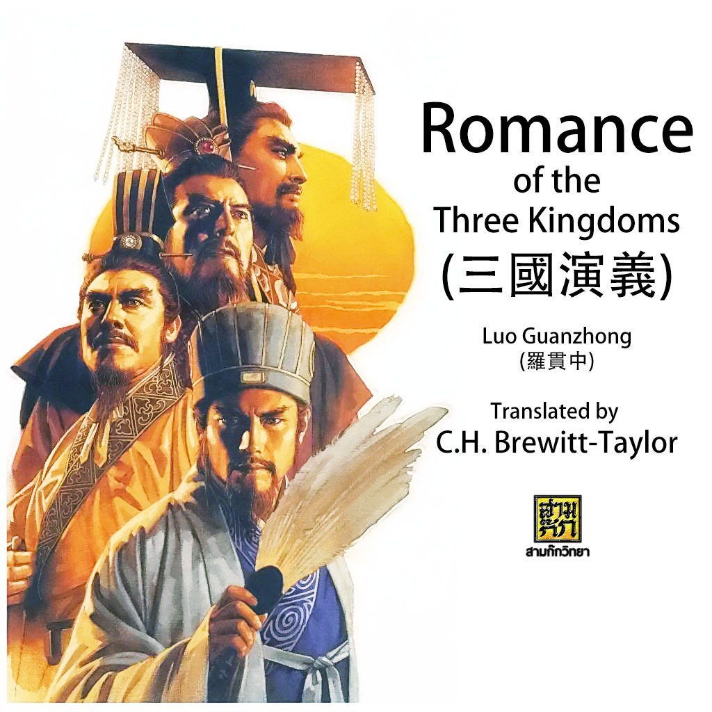
Chiang Kai-shek (1887–1975), generalissimo of the Nationalists and later ruler in Taiwan
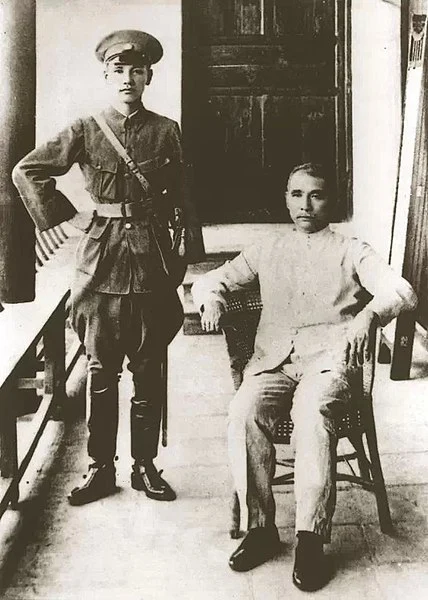
Mao and Chiang briefly cooperated to fight against Japanese invasion. Afterwards they resumed the civil war. Initially, the nationalists under Chiang seemed winning, and the communists retreated to remote regions in the Northwest.

US president Truman and US ambassador to China, John Leighton Stuart. Instead of supporting a fully democratic China, they desired China to be split between the nationalists and communists. At a crucial moment, Truman withdrew military support to the nationalists, leading to their defeat by the communists. Eventually the entire mainland turned "red" while the nationalists retreated to Taiwan. Thus the US played a key role to establish the Cold-War configuration where China is divided into two opposing camps. This pattern is to repeat ad nauseam in the Cold War period, up to this day.
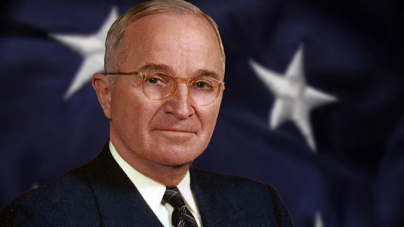
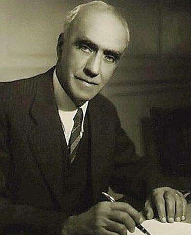